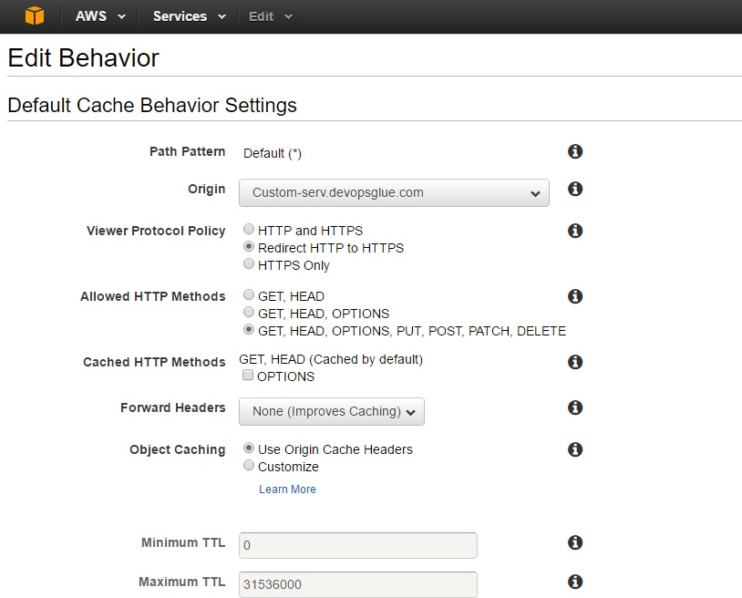
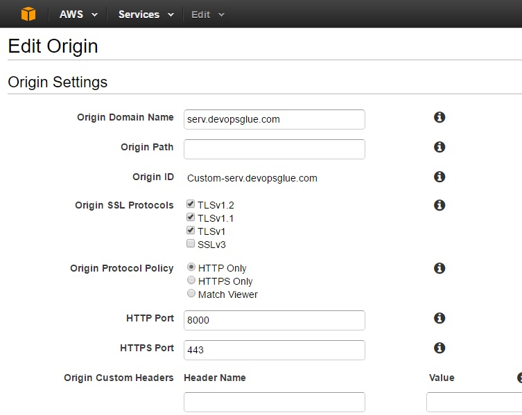
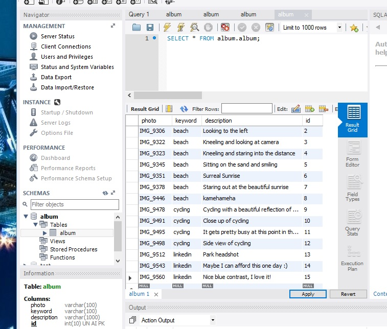
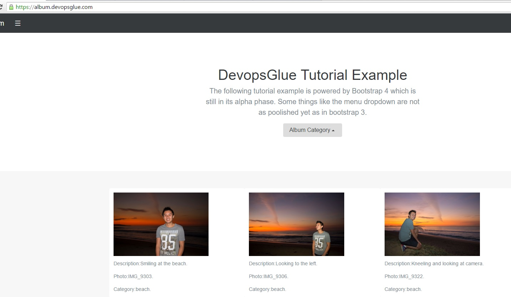
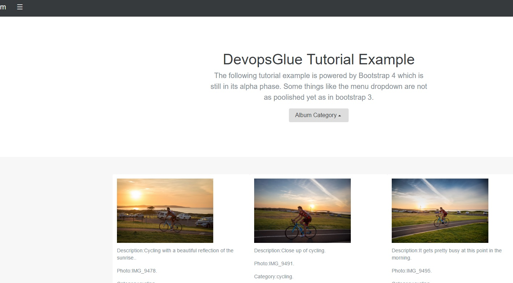

Ajax is allows for dynamic conntent to be loaded in html, however the jQuery framework provides a much neaterway of using ajax as compared to the previous tutorial. This project aims to use nodejs to connect to a MySQL database and retrieve photo db records that have been categorized into areas like beach and cycling. The index.html page will trigger the photos to be loaded for the different categories through a jQuery ajax call through a dropdown menu.
Github Project files index.html | package.json | node_server.js
Background with AWS Cloudfront
You will notice the source files will constantly refer to https://album.devopsglue.com , however NodeJS will listen on port 8000. Since my Internet Service Provider blocks port 80, I had to use AWS cloudfront to connect to my home server on port 8000 to overcome the ISP port block. AWS Cloudfront is a site accelerator by caching static content, however if configured to allow method POST and so on it, will allow for the pass through of dynamic content back to my server (the origin server) to interact with NodeJS on port 8000.
Cloudfront Cache Behaviour
{kind=link}
Cloudfront Origin Settings
{kind=link}
The Code
NPM is an amazing dependecy package manager for NodeJS, hwoever after many projects it can surely get annoying typing npm install <package> for many projects. Once you have installed the npm modules of your choice , you can run npm init which will create a package.json file that can be committed to any code repository. Once the package.json file exists you can run npm install to automatically install everything you need. You can copy this package.json file to get started.
package.json template:
{ "name": "node-mysql", "version": "0.0.1", "dependencies": { "express": "^4.10.6", "mysql": "^2.5.4", "body-parser": "~1.15.0" }, "description": "ERROR: No README data found!", "main": "node_server.js", "devDependencies": {}, "scripts": { "test": "echo \"Error: no test specified\" && exit 1" }, "author": "", "license": "BSD" }
The jQuery framework for ajax is much more simpler than using xmlhttp requests. The framework infact uses xmlhttp, but this is all done under the hood to provide developers with a seamless experience. The function below takes in a category triggered by a menu dropdown and then uses the method POST to pass this variable to the node_server.js. Basically this is much better than xmlhttp because you only need the condition of success and not have to worry about the state and the http header as in xmlhttp. The jQuery framework abstracts everything to allow the developer to focus on delivering code that works. The code below will replace the div 'photos' with the response from the nodejs server. The POST key is 'keyword' and is what NodeJS express will be looking for, the category will saved as a variable as passed through the javascript function.
index.html jQuery AJAX extract:
function getPhotos (category) { var formData = { keyword : category }; $.ajax({ url : "https://album.devopsglue.com/query", type: "POST", data : formData, success: function(data, textStatus, jqXHR) { //data - response from server $('#photos').html(data); }, error: function (jqXHR, textStatus, errorThrown) { $('#photos').html("Damn it's broken!"); } }); }
As with the previous tutorial, NodeJS here uses the express framework for routing, the route in the below example is 'query' to invoke the mysql connection to find all records associated to the passed category from ajax and 'menu' which invokes mysql. Which returns the unique collection of categories for our menu dropbox. We use the body-parser to retrieve the POST variables invoked by ajax since it is no longer included as standard in express 4.0. The mysql node module sanitizes passed in variables by preventing escapes for possible SQL injection. The Node code is pretty straight forward as with the previous node tutorial, the '+=' appends strings and since we are appending html it gives for better readability. Once the html variable is compiled with our html it is sent back to ajax.
node_server.js template:
var express = require("express"); var app = express(); var mysql = require('mysql'); var connection = mysql.createConnection({ host : 'localhost', user : 'user', password : 'password', database : 'album' }); var bodyParser = require('body-parser'); app.use(bodyParser.urlencoded({ extended: true })); app.use(bodyParser.json()); /* serves main page */ app.get("/", function(req, res) { res.sendfile('index.html') }); app.post("/menu", function(req, res) { var keyword = ""; var html = ""; connection.query("SELECT DISTINCT keyword from album", function(err, rows, fields) { if (!err) { html += "<div class=\"dropup\">"; html += "<button class=\"btn btn-default dropdown-toggle\" type=\"button\" id=\"dropdownMenu1\" data-toggle=\"dropdown\" aria-haspopup=\"true\" aria-expanded=\"true\">"; html += "Album Category"; html += "<span class=\"caret\"></span>"; html += "</button>"; html += "<ul class=\"dropdown-menu dropdown-menu-right\" aria-labelledby=\"dLabel\">"; for (var i = 0; i < rows.length; i++) { keyword = rows[i].keyword; html += "<li><a href=\"javascript:getPhotos('" + keyword +"');\">" + keyword + "</a></li>"; }; html += "</ul>"; html += "</div>"; console.log(html); res.send(200,html); } else { console.log('Error while performing Query.'); } connection.end(); }); }); app.post("/query", function(req, res) { /* some server side logic */ var value = req.body.keyword; var photo = "NULL"; var description = "NULL"; var html = ""; connection.query("SELECT photo,description,keyword from album WHERE keyword='"+ value + "'", function(err, rows, fields) { if (!err) { for (var i = 0; i < rows.length; i++) { photo = rows[i].photo; description = rows[i].description; category = rows[i].keyword; html += "<div class=\"card\">"; html += "<img src=\"https://www.devopsglue.com/photoshoot/" + photo + ".jpg\" style=\"width: 75%; height: 75%\" alt=\"Card image cap\">"; html += "<p class=\"card-text\">Description:" + description + ".</p>"; html += "<p class=\"card-text\">Photo:" + photo + ".</p>"; html += "<p class=\"card-text\">Category:" + category + ".</p>"; html += "</div>"; }; console.log(html); res.send(200,html); } else { console.log('Error while performing Query.'); } connection.end(); }); }); /* serves all the static files */ app.get(/^(.+)$/, function(req, res){ console.log('static file request : ' + req.params); res.sendfile( __dirname + req.params[0]); }); var port = process.env.PORT || 8000; app.listen(port, function() { console.log("Listening on " + port); });
The below shows the basic mysql schema, with one table called 'album' in a db called 'album'. These fields store a filename in field photo which is what the camera has called the jpg, a category which I have categorized the photo as belonging to and a description briefly given about the photo.
MySQL Schema
{kind=link}
Seamless ajax html transitions
The below is the finished product, the menu dropbox called 'Album Category' toggles the photos based on what category is selected.
Ajax - category : beach
{kind=link}
After clicking the menu option 'cycling' ajax switches the pictures by passing a call through to NodeJS to find the 'cycling' pictures in MySQL. This loads only the pictures portion of the page and not the entire page.
Ajax - category : cycling
{kind=link}